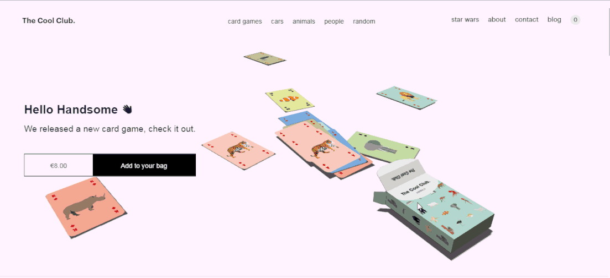

The Cool Club

The cool club is a website that sells various card game cards. These game cards are not ordinary playing cards. They have different colors and different cute patterns or characters on them, such as cars, animated characters, animals. This is a very interactive website, and every page can have cute and fun interactions with users. I like this website very much, and it will be very interesting to see these cute patterns.
This website is very personalized and modern. The theme color of the entire website is candy color, full of youth and vitality. The card box on the homepage will spit out different cards after clicking with the mouse like a game. When the user choosing different types of cards, and when the mouse touches each carton, the characteristics of which card will be displayed above, such as what patterns are on it. I think this is very user-friendly, and it is convenient for people to buy I easily learned what the card looks like before.
Although there are many colors used on web pages, the entire website looks organized and not confusing. I think this kind of website interaction design is very successful. The website does not use a lot of text, complicated descriptions, or make uses feel confused. Using rich colors and fun game patterns can make users have a very rich interactive experience and every detail is unique. These kinds of websites are very attractive to young people and they will also have a good user experience. To be honest, the website that sells products should be made in such an attractive style, which not only makes users feel the fun of using the website but also can prompt users to buy products. This will make users feel that this website is very carefully promoting their products.